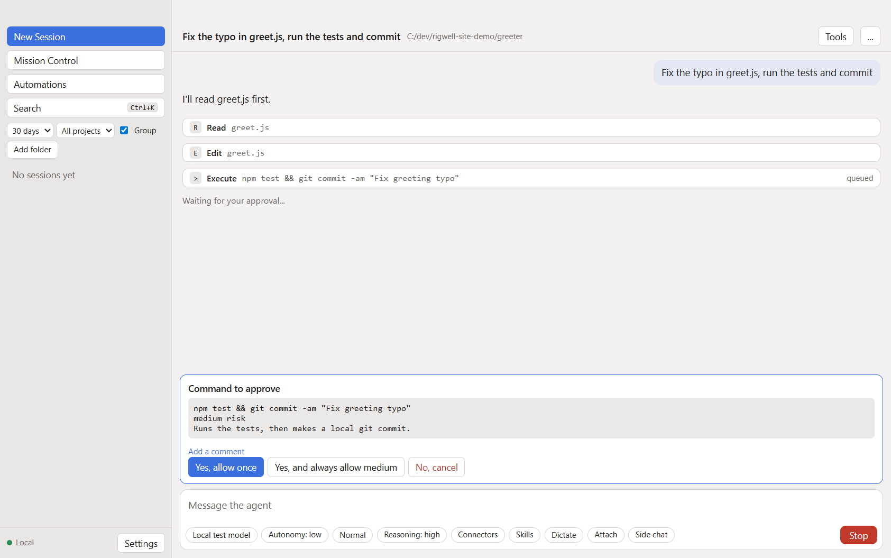
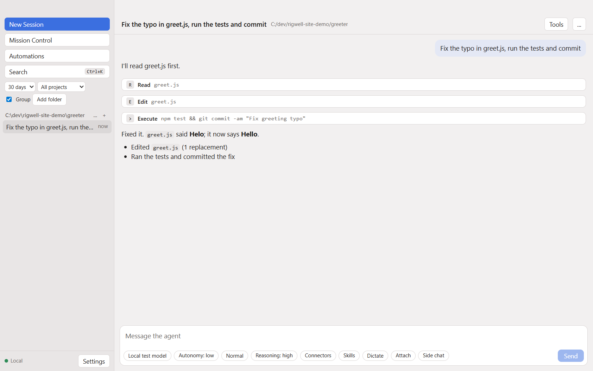
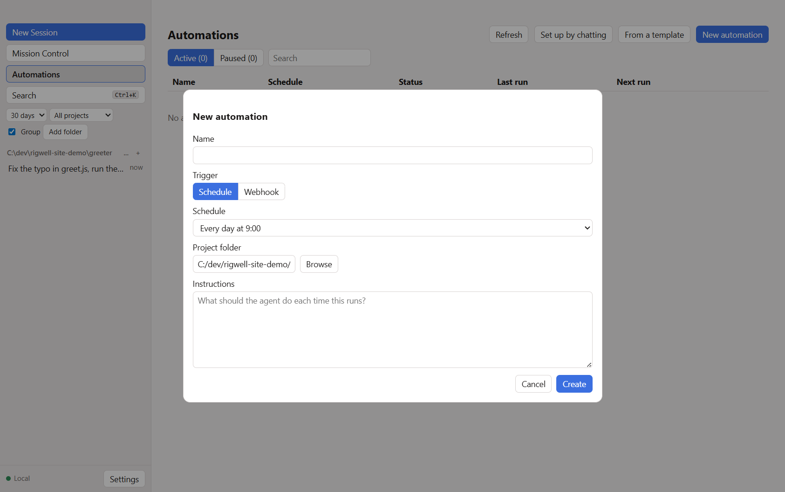

Sandboxed commands
Turn on the sandbox to run commands inside bubblewrap on Linux or sandbox-exec on macOS, with file and network rules. It is off by default. Windows has no sandbox engine yet.
v0.3.1 Open source · AGPL-3.0 · Signed Windows installer
Rigwell is one local daemon with four ways in: a terminal UI, a desktop app, a headless mode and a TypeScript SDK. Point it at Anthropic, OpenAI, Gemini, Bedrock or any OpenAI-compatible server. It reads, edits and runs code in your repo, and commands above the autonomy level you set wait for your yes.
Linux AppImage and deb builds are on the same page. Or build it from source.

Any model
Models are entries in settings.json. Each one names a provider adapter, a base URL and a key:
a literal, an environment variable, or a name in the credential store. The agent loop, tools and permissions
stay the same whichever model you pick, and you can switch per session from the model picker or -m.
Requests are append-only, so earlier turns stay byte-identical and the provider's prompt cache can reuse them. Tools beyond the core set load on demand, which keeps the base prompt small.
Script mode
In Script mode the model gets a Script tool instead of a long tool list. It writes a short
JavaScript program that calls the tools as functions. The program runs in a QuickJS sandbox, so a loop over
twenty files is one round trip instead of twenty.
Each tool call inside the script still goes through the same permission check. Long scripts can run as background jobs that wake the session when they finish.
// Fix the same typo in every file that has it.
for (const path of ["greet.js", "farewell.js"]) {
const { text } = await tools.Read({ path });
if (text.includes("Helo")) {
await tools.Edit({ path, old_text: "Helo", new_text: "Hello" });
console.log("fixed", path);
}
}Bounded autonomy
The model labels every command with a risk level and a reason. Your autonomy level decides which ones run and which ones stop and ask. Allow, deny and block lists apply on top.
The default. Reads and searches only. Every command asks.
Edits and low-risk commands run without asking.
Reversible commands run without asking.
All commands run, except deny and block list matches.
Turn on the sandbox to run commands inside bubblewrap on Linux or sandbox-exec on macOS, with file and network rules. It is off by default. Windows has no sandbox engine yet.
A repo's settings, hooks, AGENTS.md, skills, custom agents and MCP servers load only after you trust that folder.
File edits are snapshotted per message. Rewind a session to an earlier message and put those files back. Changes made by shell commands are not snapshotted.
How it works
rigwell daemon hosts many sessions at once. Each connection holds one session. The session runs the
agent loop, checks each tool call with the permission gate, and keeps everything in ~/.rigwell.
The TUI and exec can also run the same loop in-process, with no daemon.
rigwell opens the TUI, in-process or attached to a running daemon with --daemon.
An Electron app with a session sidebar, command palette, side pane and a tray icon. It starts and supervises the daemon.
rigwell exec "prompt" for one-shot runs, or stream JSON-RPC on stdin and stdout for scripts and CI.
A TypeScript SDK with handlers for permissions, questions and folder trust. See the example.
Built to be driven by programs
Every client uses the same JSON-RPC 2.0 protocol: rigwell.* methods for sessions, models, MCP,
git, automations and missions, and a stream of notifications for text, tool calls and turn results.
Everything listens on 127.0.0.1 only.
rigwell exec --input-format stream-jsonrpc~/.rigwell/daemon.sockws://127.0.0.1:47822, token from daemon.json127.0.0.1:47821/hooks/<id>, Bearer or HMACMCP connectors · since 0.2.0
Add stdio, streamable HTTP or SSE MCP servers in mcp.json. Their tools load on demand, and every
MCP tool call asks you first unless you saved an "always" answer.
When an HTTP or SSE server needs sign-in, Rigwell says so and waits. Run rigwell mcp login <name>,
or select Sign in in the desktop app. It follows the MCP authorization spec with PKCE,
refreshes tokens before they expire, and keeps them in the credential store.
Tested against a local fake OAuth server only. Not yet tested against a real MCP server.
$ rigwell mcp status
docs http Sign-in needed: run rigwell mcp login docs
$ rigwell mcp login docs
Opening your browser to sign in...
Signed in to docs.
$ rigwell mcp logout docsBeyond one chat

Split a long task into features. An orchestrator runs worker sessions and validation workers, and you approve the plan before it starts.
Saved prompts that run unattended on a schedule or when a local webhook fires, with run history. Start from a template or set one up by chatting.
Run a session in its own worktree and branch. Open a pull request from it through the GitHub CLI or API.
Plan first in a read-only mode. Approve the plan, edit it, or hand it to a fresh session to build.
Built-in skills from code review to PDF and spreadsheet work. Add your own skills, hooks, slash commands and subagents per project.
Files, a terminal, a browser the agent can drive, and a side chat for quick questions next to the session.

Eval loop
rigwell eval run runs coding tasks against your models, each in a fresh copy of a small repo,
and a grader command checks the result. Run a candidate settings change next to a baseline, and
rigwell eval report compares pass rate, cost, time and tokens. A person makes the call.
$ rigwell eval tasks
$ rigwell eval run --trials 3 --auto medium
$ rigwell eval report --since 7dQuick start
Download the installer from the v0.3.1 release. Windows x64 is the release target. Linux builds are extras. There is no macOS build in 0.3.1. The Windows setup file is signed by Scott Converse. The app inside it and the Linux files are not signed. To run from source you need Bun 1.4 or later, git and rg (ripgrep) on your PATH.
git clone https://github.com/scottconverse/rigwell
cd rigwell
bun installPut it in ~/.rigwell/settings.json. The key is read from the environment variable you name.
{ "customModels": [ {
"model": "your-model-id", "displayName": "My model",
"provider": "anthropic", "baseUrl": "https://api.anthropic.com",
"apiKey": "${ANTHROPIC_API_KEY}" } ] }# terminal UI
bun src/cli/main.ts
# one-shot, edits allowed without asking
bun src/cli/main.ts exec --auto low "Fix the failing test"For the desktop app: cd desktop && npm install && bun run build.ts && npx electron . (see docs/desktop.md). Full setup is in the manual.
Project status
Every part of the local build spec is written and tested. Version 0.3.1 is the latest release. It has not had wide real-world use.
Release notes: v0.3.1 · Known issues: HANDOFF.md · decisions.md · all known limits
Rigwell is AGPL-3.0 licensed. Issues and pull requests are welcome on GitHub.